점핑클럽 가입
줄넘기 수업 준비,
이제 혼자 고민하지 마세요
급수 영상, 음원, 월 교육계획표까지
매일 쓸 수업 자료를 협회가 만들어 드립니다
500+
교육자료
35개
단계별 인증급수
7년+
장기 교육과정
2000+
음원 및 영상
이용 범위는 회원 유형에 따라 다르며, 프로그램을 교육관 상황에 맞게 활용할 수 있습니다.
Materials
※ 소개된 내용은 최우수회원(CEO) 기준이며, 제공 범위는 회원 등급별로 다릅니다.
최우수회원(CEO)
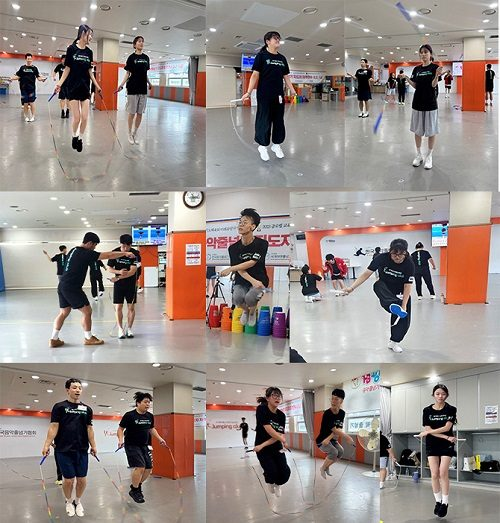
우수회원(WTRA+)

회원(WTRA)

태권도장에서 줄넘기를 보조운동으로 쓰는 유형입니다.
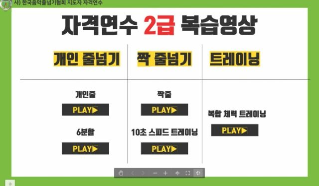

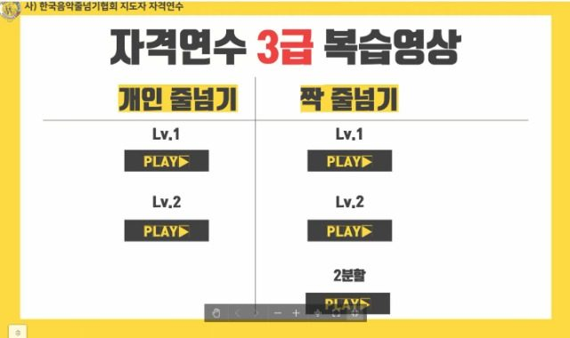
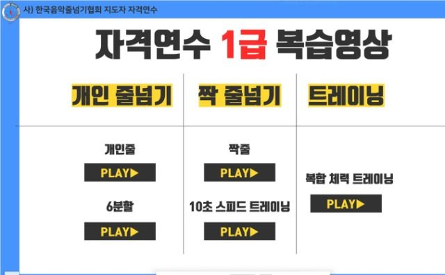
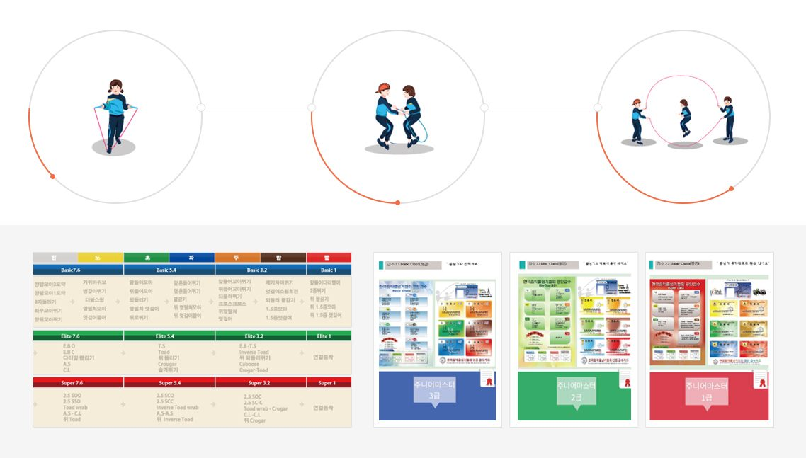
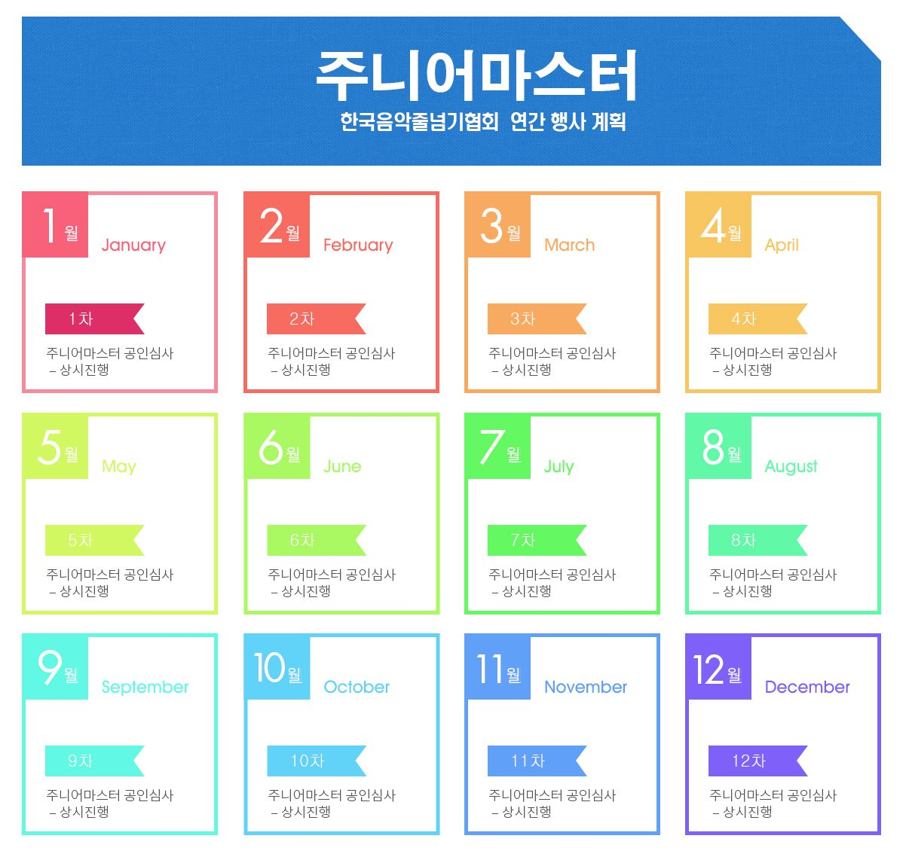
보조운동에 매월 새 영상과 음원이 더해지는 유형입니다.
WTRA 자료 전체 포함
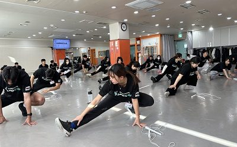
줄넘기 전문교육관을 운영하는 유형입니다.
WTRA+ 자료 전체 포함

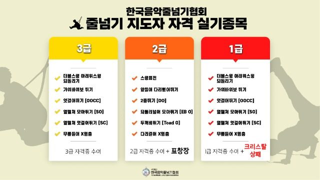
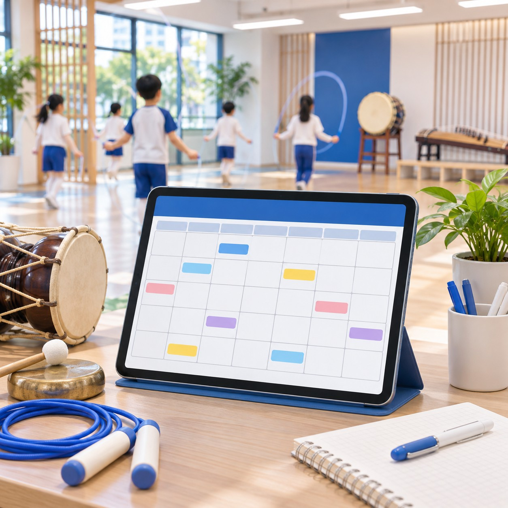


영상은 15~30초 미리보기로 넣고, 전체 영상은 가입 후 제공합니다. 자료별 이미지·미리보기 영상 파일
Real story
이런 고민, 충분히 이해합니다.
매일의 수업 준비는
늘 관장님 혼자의 몫이었으니까요.
이런 고민을 덜어 드리기 위해
협회가 수업을 만들어 왔습니다
2011년부터 쌓아 온 음악줄넘기 교육,
교육관 개관부터 매일 수업까지 함께합니다
Solution 01. 협회 인증급수

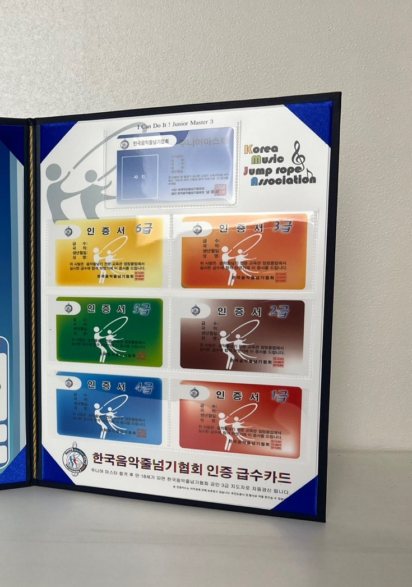
Solution 02. 개관 준비
개관 자료의 제공 범위는 가입 유형에 따라 다릅니다.
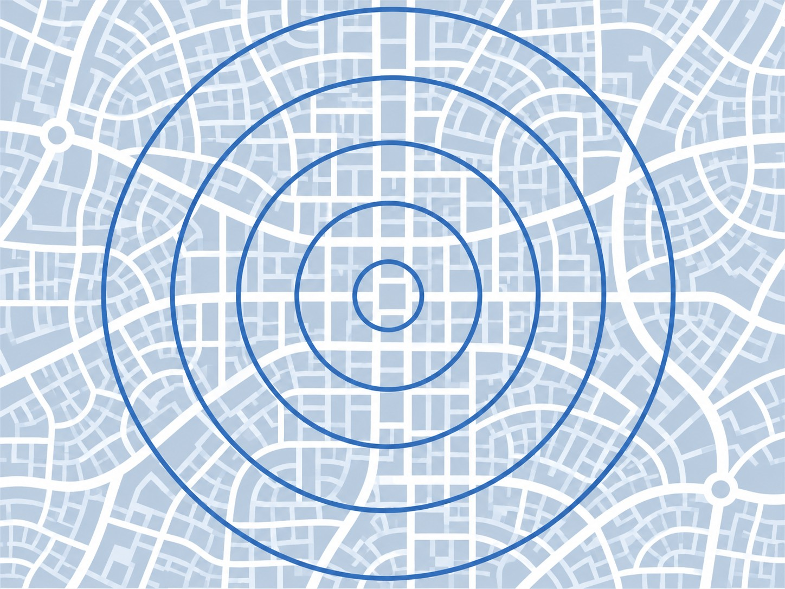
Solution 03. 지도자 교육
지도자 자격연수 3·2·1급
10:00~17:30 하루 과정으로 줄넘기 기술과 지도법, 교육관 경영, 수업 자료 활용법을 배웁니다.
음악줄넘기 일요강사반
매주 일요일 2시간, 수업 지도와 학부모 상담, 최신 자료를 계속 익힙니다. 사범님도 함께 배울 수 있습니다.
태권줄넘기 자격연수
태권도와 줄넘기를 묶어 지도하는 방법을 배우는 3·2·1급 과정입니다.
경영 세미나
교육관 운영과 마케팅을 다루는 세미나입니다. CEO 회원은 할인된 비용으로 참여합니다.
수강료는 가입비와 별도입니다. 과정별 수강료
Solution 04. 매일 수업
Solution 05. 학부모 소통

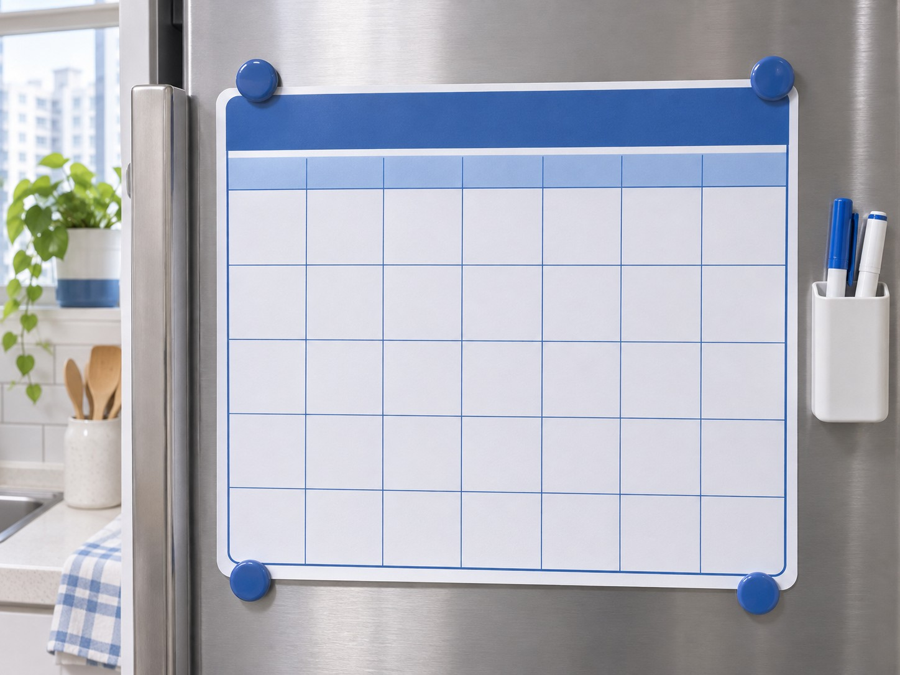
Solution 06. 함께 성장
01교육관 운영 지원
02대회 · 심사
Membership
태권도장이라면 지금 시간표에 줄넘기 시간만 더하면 됩니다.
줄넘기 전문교육관이라면 CEO 유형으로 5단계 전 클래스를 운영합니다.
WTRA
태권도장 · 줄넘기를 보조운동으로
상담 후 안내
WTRA+
보조운동 + 매월 새 영상·음원
상담 후 안내
CEO
줄넘기 전문교육관 운영 · 창업
상담 후 안내
가입비
초기 물품·자료, 1회
상담 후 안내
급수카드 발급 권한 · 경영 컨설팅 · 로고 사용 · 행사·대회 참가 · 주니어마스터 심사 · 세미나 할인 · 물품 단체구매 할인
이용료와 가입비는 1:1 면담에서 교육관 현황을 확인한 뒤 안내합니다. 자료 구성은 변동될 수 있습니다.
Compare
| WTRA | WTRA+ | CEO | |
|---|---|---|---|
| 줄넘기 급수(베이직·엘리트·슈퍼) | |||
| 급수 트레이닝 영상 · 음원 | |||
| 음악줄넘기 초·중·상 · 펌프줄넘기 | |||
| 교육철학 편지글 · 기본 디자인 | |||
| 매월 교육 영상 · 음원 5개 | – | ||
| 5단계 전 클래스(헤드마스터까지) | – | – | |
| 레벨 분할 영상 · 매일 교육계획표 | – | – | |
| 수련계획표 · 학부모 상담 해답집 | – | – | |
| 첫걸음 상담책자 · 교육관 디자인 파일 | – | – | |
| 1km 거리 제한 | – | – |
태권도 수업 시간이 줄어들지 않을까요?
"줄넘기는 태권도 수업을 돕는 보조운동입니다."
WTRA는 줄넘기를 몸풀기·보조운동으로 넣는 유형입니다. 편성은 도장 시간표에 맞게 정하고, 태권줄넘기 연수에서 태권도와 묶어 지도하는 방법도 배울 수 있습니다.
줄넘기를 직접 가르쳐 본 적이 없는데 괜찮을까요?
"시범은 영상이, 지도법은 연수가 채워 드립니다."
가입 유형에 맞는 급수 영상을 수업에 바로 활용할 수 있습니다. 지도법은 협회 지도자 자격연수(3·2·1급)와 매주 일요일 강사 과정에서 배웁니다.
사범님에게 줄넘기 수업을 맡겨도 되나요?
"사범님도 같은 과정으로 배울 수 있습니다."
일요강사반과 자격연수에서 지도법을 배운 뒤, 가입 유형에 맞는 급수 영상으로 수업하시면 됩니다. 월 교육계획표는 CEO 유형에 제공됩니다.
처음 여는 줄넘기 교육관도 가입할 수 있나요?
"CEO 유형이 줄넘기 전문교육관을 위한 유형입니다."
CEO 유형은 5단계 전 클래스와 매일 교육계획표, 교육관 디자인 파일까지 제공합니다. 상담에서 희망 지역의 1km 거리 제한부터 확인해 드립니다.
근처에 이미 점핑클럽이 있으면 어떻게 되나요?
"CEO 유형은 1km 거리 제한을 둡니다."
기존 CEO 교육관과의 거리는 상담 단계에서 희망 주소로 확인합니다. 기준점과 예외 사항은 계약 조건으로 안내합니다. 상권보호 적용 기준·계약 조항
상담만 받아 봐도 되나요?
"상담 후에 결정하셔도 됩니다."
1:1 면담에서 교육관 현황과 상권을 확인하고 유형과 비용을 안내해 드립니다. 계약은 가맹사업 해당 시 정보공개서 등 법정 문서 제공·숙려기간 경과 후에 진행합니다.
가입비에는 무엇이 포함되나요?
"처음 한 번 내는 초기 물품·자료 비용입니다."
포함 품목·금액
계약 기간과 해지 조건은 어떻게 되나요?
한 줄 답변
계약 기간·해지 조건
신청 내용을 남기시면 담당자가 연락드려 1:1 면담 일정을 잡아 드립니다.
010-2050-1865
채널 추가 후 1:1 상담
다음 설명회 일정